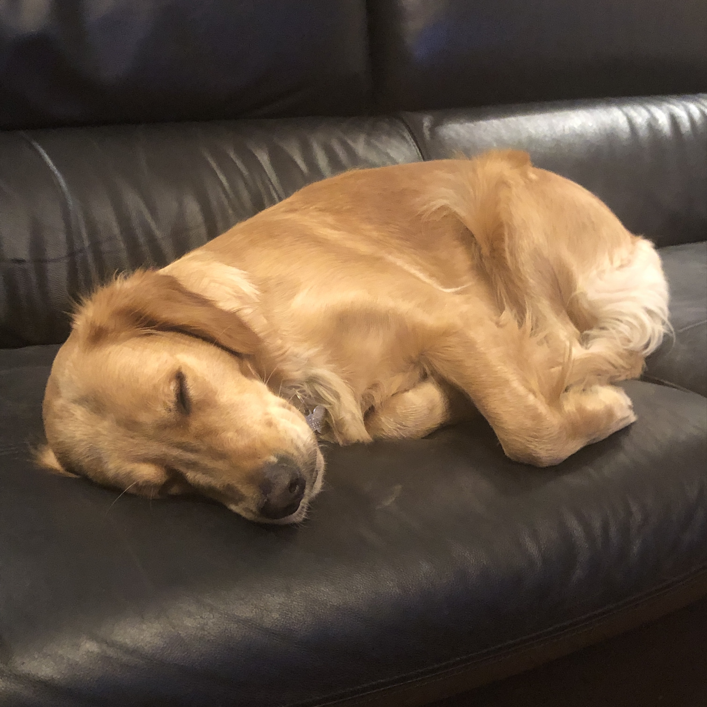
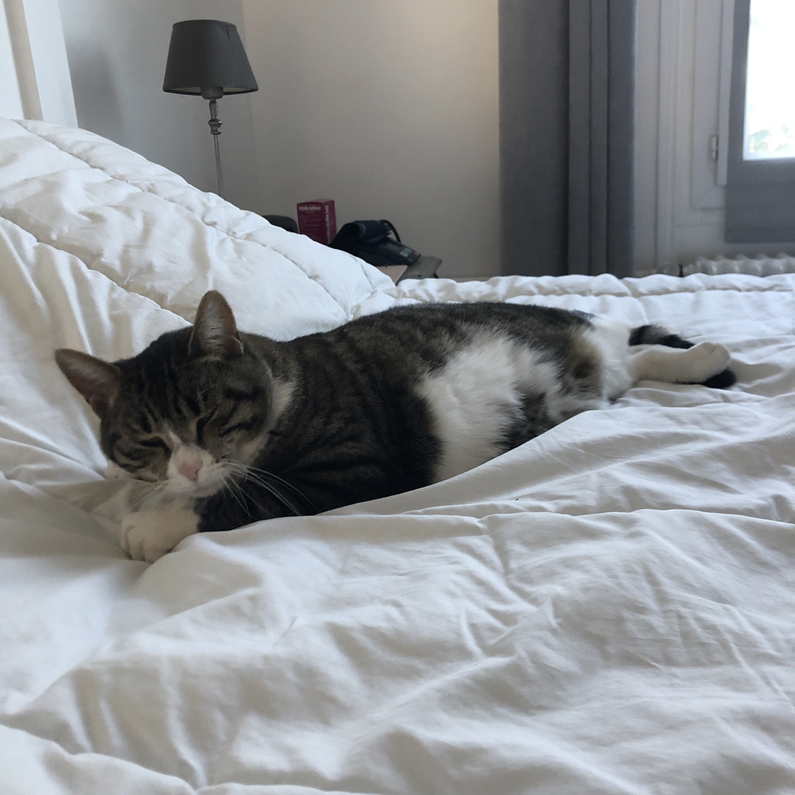
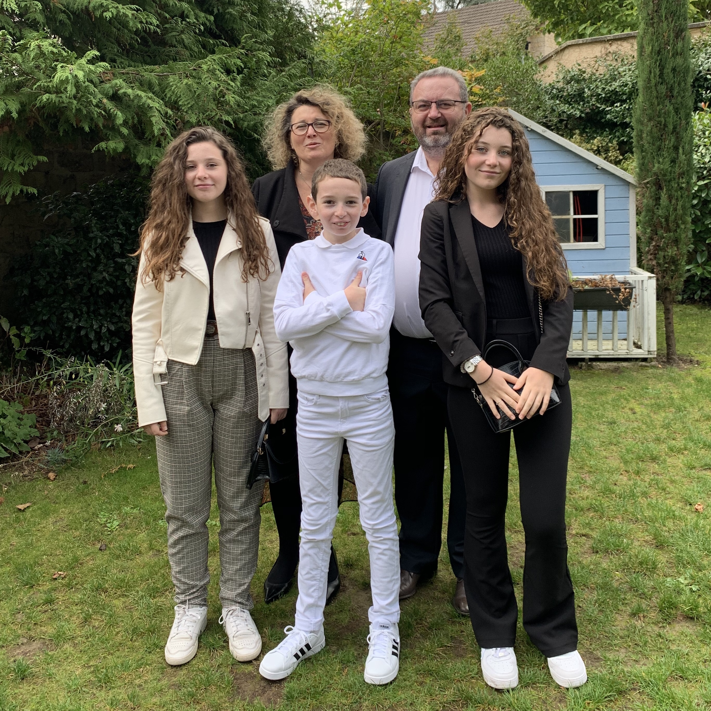
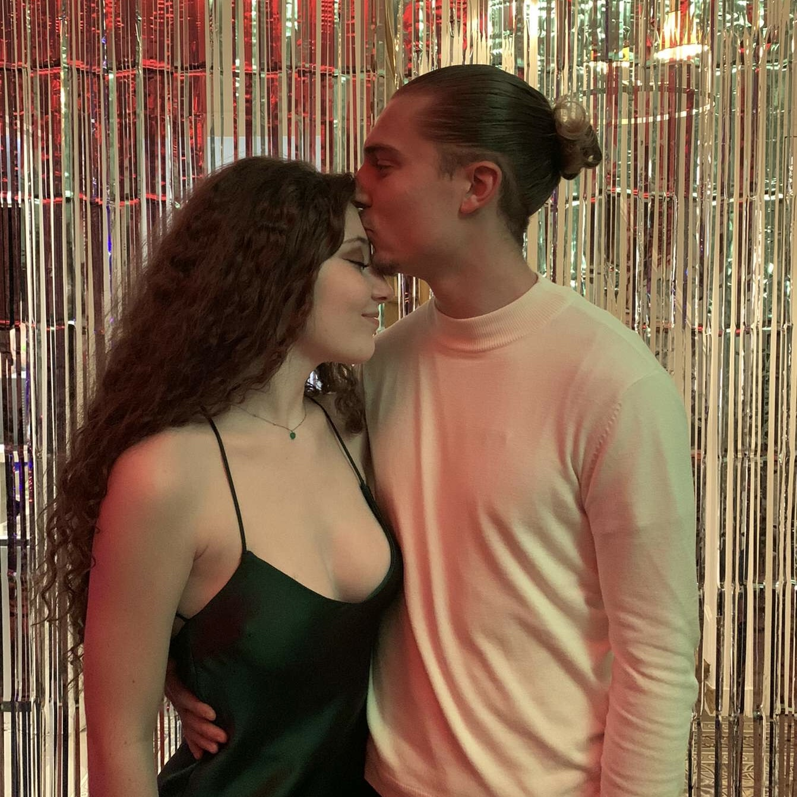

Je fais de la danse depuis que j'ai 3 ans, j'ai essayé plusieurs styles : modern jazz, ragga, street dance et danse orientale. C'est pour ça que quand je vais en soirée avec mes potes le dancefloor est mon endroit préféré.
Non je ne suis pas encore maman, mais j'adore mon petit chat, Maya, 2 ans et mon petit chien Happy, 1 an et demi. Elles ne peuvent pas se passer l'une de l'autre même si elles font comme si c'était pas le cas. Leur passe temps favori : dormir.
 Même si tout le monde sais que je suis la préférée de mes parents, ils ont quand même voulus me faire une petite soeur, Chloé 17 ans et très susceptible et un petit frère Thomas 12 ans, encore susceptible. Malgré ça on s'aime quand même et tous les 5 on forme la famille tuche.
Ca va faire trois ans que je sors avec cet être humain, qui me sert de chéri, il s'appelle Ilhan, c'est aussi mon meilleur ami et la personne qui me fait le plus rire sur cette terre.
La straciatella (attention le fromage pas la glace), mon doudou Tiber 🐻(oui je sais même à 18 ans) et Grey's Anatomy aka la meilleure série de l'univers (même si spoiler tout le monde meurt).